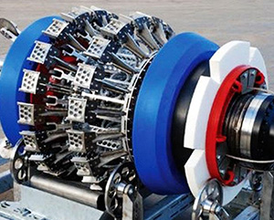
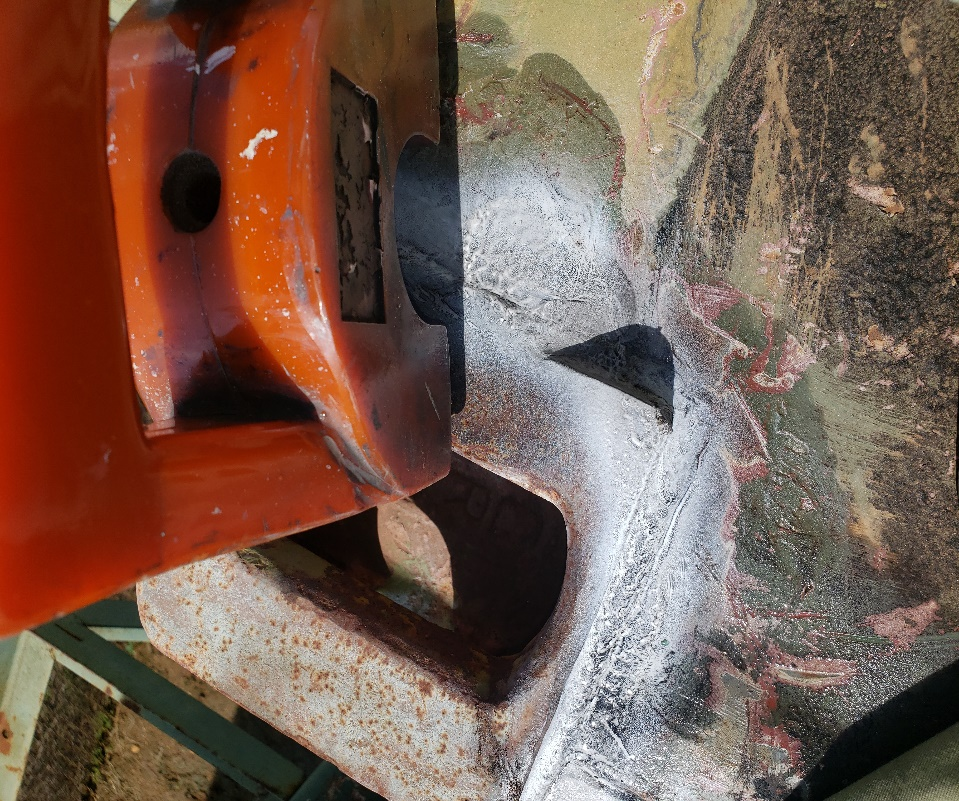
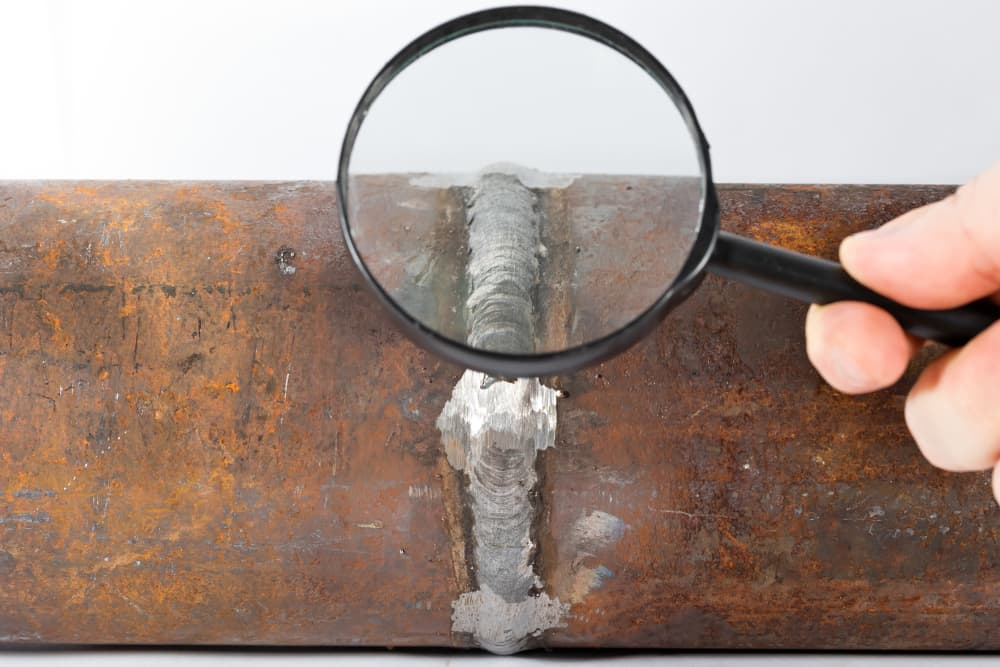
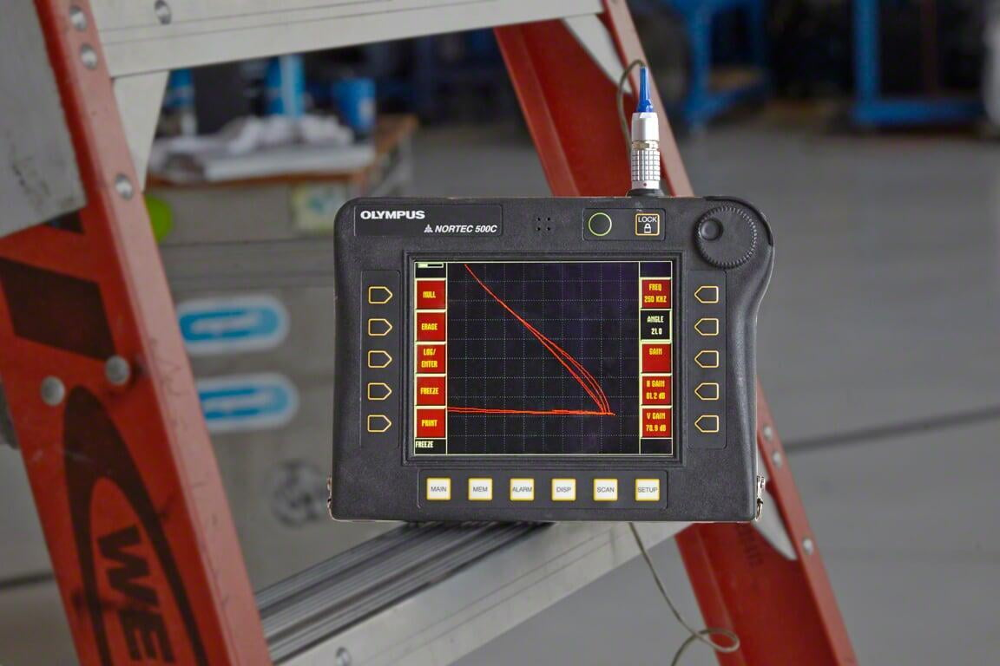
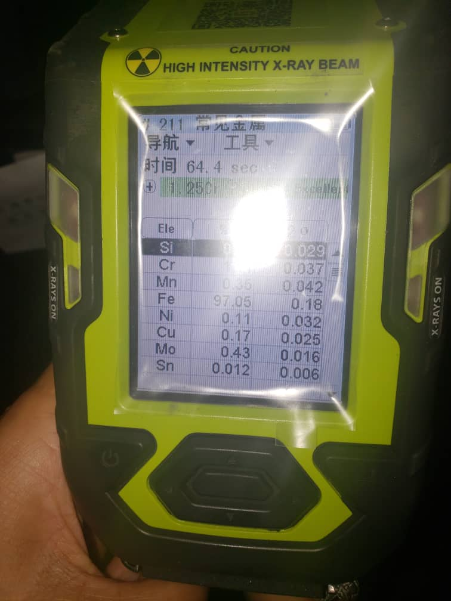

- +256 773 595 937
- info@domain.com
- Mon - Sat 8:00 - 17:30, Sunday - CLOSED
NDT Inspection
EENSL has been extensively involved in a number of mechanical projects for new installations, upgrades, and relocations of existing plants in various industries. We have both the capacity to fabricate install new and upgrade existing plants and structures both efficiently and safely.
We offer specialised welding services for a wide range of materials including Copper, Brass, Stainless steel, and all forms of Carbon steel. We not only have the ability to perform a variety of different welding disciplines, from MiG, Tig, SMAW, and FCAW. But we also adhere to all unique requirements and procedures that may be required by clients.
Methods
Measure the savings by adding up the true costs of conventional out-of-service inspection.
The total cost of conventional inspections are far greater than the expense of cleaning and MFE inspection. The cost of material transfer, product downgrades and tank downtime are enormous.
The hidden cost of premature repairs can be just as high. When the tank is empty, you will ll have to complete all repairs quickly. This usually means paying a premium for service and completing repairs that are not necessary for another five to 10 years. Now you can reduce costs by completing an API 653 inspection of your AST (Above- Ground Storage Tank) without taking the tank down for manual cleaning and inspection
RTI can scan the floor of a full tank while in- service and provide you with a quantitative assessment of tank floor integrity all with greater reliability and
- Eliminate the high cost of taking down your tanks
- Complete an API 653 inspection in days instead of weeks or months
- Avoid disruptions in normal service and keep revenue consistent
- Perform repairs only as needed
- Minimize impact to your costs and operations
- Reduce environmental and safety risks
The RTI service follows a digital inspection grid and collects more than 200,000 UT scans* for computer analysis.
The RTI service systematically scans the tank bottom with an array of eight ultrasonic transducers, and relays high- volume UT data for analysis. The robot pushes sludge aside as it travels, making cleaning and waste disposal unnecessary in many cases* Based on the average scan pattern in a 30m Diameter tank.
High-density UT scanning reveals more about the true condition of your tank. The full Service tank inspection provides a complete, 10-year API 653 report on the condition of your tank.
Your report includes:
- Top-side and bottom-side corrosion locations
- Floor-plate thickness and pitting
- Videotape of roof underside and vapor space structures
The tank inspection report also gives you a recommended timetable for future repairs. This powerful tool enables you to manage costs and cash flow by scheduling out-of-service cleaning and repairs efficiently
High-Density UT Scanning Reveals More About the True Condition of Your Tank
The RTI service systematically scans the tank floor and collects a high volume of UT data for analysis. Unlike traditional inspection technologies, the RTI scanning system is not affected by tank coatings, including fiberglass. Incoming data streams pinpoint areas of corrosion and quantify the remaining plate thickness.
Verification Studies prove that this is the API 653 inspection you can rely on.
In study after study, the RTI system was tested side by side against the traditional out-of-service method. Tanks were first tested robotically while in operation, and then drained, cleaned and inspected conventionally. These results consistently confirmed that the RTI evaluation yielded an estimate of remaining useful floor life that was identical to an out- of-service inspection.
.

Intelligent pigging is a technique of inspection of pipelines using digital technology to understand their condition. It is widely used to gather important data, such as the presence and location of corrosion or other irregularities on the inner walls of the pipe.

Surface-breaking flaws such as cracks, laps, porosity, etc. To be detected, the flaw must reach the surface to be tested.
Ultrasonic Inspection (UT) uses ultrasonic waves to measure internal defects in a variety of materials. It can be used on most materials. UT can be used to detect corrosion, thinning, and internal planar defects. It also identifies cracks and voids and is useful for testing pressure vessels, storage tanks, and welds in high-pressure environments. The method is also useful for inspecting forgings, castings, and structural steel welds.
It can be used to gauge thickness through surface paint. It can penetrate deep into materials and gives instant results, allowing for a fast report turnaround. UT only detects faults within a material, and as such is often combined with surface inspection tests such as Magnetic particle inspection. When inspecting welds, a minimum material thickness may be required. Also, surface dirt can impact the quality of the result, as can irregular-shaped components, so the method is not suitable for every asset. In addition, the single direction of the probe’s beam means the probe must be moved manually to cover all of the components. Application
- • For storage tanks and pressure vessels.
- • For pipework
- • For pipework.
- • For structural steel.
- • For welds, welds in structural steel and in high pressure environment
- • For forgings and castings.
- • For shafts.
- •For heat exchangers and boilers.
Phased Array (PA) is a non-destructive testing method that allows for permanent records of a component’s internal structure to be stored. It is portable and collects a huge amount of data, which makes it perfect for monitoring and maintenance. Unlike manual ultrasonic testing, the direction of the sound from a Phased Array probe can be moved electronically, meaning PA takes less time to perform. PA is excellent for detecting internal planar defects, corrosion, thinning, cracks, and voids. It is perfect for inspecting storage tanks, pressure vessels, forgings, castings, small metal components, pipe work, and welds.
This method will not detect surface-breaking defects, for which an alternative technique such as Dye Penetrant Inspection may have to be used. It also requires materials to have a minimum thickness, especially for welds. Plus, it is reliant on a clean and smooth material surface, so may not be suitable for all assets.
Application
- • For storage tanks and pressure vessels.
- • For small metal components.
- • For pipe work.
- • For welds, welds in structural steel and high-pressure environments.
- • For forgings and castings.
- • For heat exchangers and boilers.
Magnetic Particle Inspection (MPI) is used to detect surface defects in ferromagnetic (magnetic) materials. A magnetic field is generated inside the component and a magnetic particle powder is applied. The magnetic flux leaks through any defects and attracts the particles, highlighting any defects. MPI is normally used to detect defects in surfaces, such as toe cracks and crater cracks. It also allows the identification of areas of porosity. It is a portable, simple method for use on castings, shafts, and welds. It gives instant results and can detect defects up to 2mm below the surface.
This method requires surfaces to be clean before testing commences. It also can require a power source and uses flammable liquids, so might not be suitable for certain areas on-site. MPI cannot be used on non-ferromagnetic materials.
Our Dye Penetrant Inspection (DPI) service is used to detect surface-breaking defects. A dye is used to highlight surface cracks and then measured under different light sources. It is a fast, low-cost method of testing. Generally, it is used on non-ferromagnetic materials or materials that are not magnetic and contain no iron. Occasionally, our technicians use this method with ferromagnetic materials, but more normally our team would opt to use magnetic particle inspection in these circumstances.
DPI is normally used to test shafts, castings, and welds, along with machined small components. It is a portable and relatively simple method of testing surface-breaking defects and surface porosity. It is also used to defect toe cracks and crater cracks. This method of non-destructive testing can only detect surface-breaking defects and requires a clean surface before the inspection can take place. It is temperature-dependent, which makes it unsuitable for low temperatures.
Application
- • For storage tanks, pressure vessels, and small metal components.
- • For welds, structural steel welds, and welds in high pressure environments.
- • For shafts and machined small components.
- • For heat exchangers and boilers.
Welding inspection is a critical part of an overall weld quality assurance program. The activity includes much more than just the Non-Destructive Examinations of the completed weld. Welds are designed to meet certain criteria but their strength can easily be compromised by defects including cracks, voids, lack of fusion and changes in density which can lead to failure.Many other issues are important, such as review of specifications, joint design, cleaning procedures, and welding procedures. Welder qualifications should be performed to better assure the weldment performs properly in service.
Application
- • Preparation of welding procedure specifications (WPS) as per codes, regulations and standards.
- • Qualification of welders and certification.
- • Establishing a quality assurance and quality control for owners and umbrella welding organization.
- • Confirming welding parameters and techniques are supported by WPS, PQR and WPQ.
- • Performing complete physical checks visual examination and in-process Non-destructive testing.
- • Ensuring Non-destructive examinations are performed at selected locations and review examiners findings.
- • Ensuring post-weld acceptance, appearance and finishing of the welded seams.
- • Performing a final audit of the inspection dossier to identify inaccuracies and incomplete information.
Although they may sound simplistic, visual inspections are vital to the start of the non-destructive testing process. We use a variety of methods to inspect your assets to determine areas of particular interest. Visual inspections are a good starting point for a series of inspections on a whole site or individual asset. We use technology such as robotic crawlers, borescopes, and UAVs (Unmanned Aerial Vehicles) to conduct visual inspections of your components.
Borescopes are particularly helpful in the inspection of engines and turbines. This method is useful for preventing unnecessary maintenance to turbines and reducing costs.Robotic crawlers allow us to remotely inspect pipelines and storage vessels amongst other installations whilst keeping our team safe.
Eddy Current Inspection (EC) uses electromagnetism to detect defects on a surface. Defects cause changes in the conductivity of the material, which allows the probe to identify areas of concern. It is a portable technique, that can be used on painted surfaces and advanced EC sets can provide permanent records of inspection data. The technique allows for instant results and there is relatively little surface preparation needed. EC is used to detect pitting, shallow surface fatigue cracks, and stress corrosion cracks in pipes and tubes.
This method is used widely in the aerospace industry for the inspection of aircraft fuselage and wings. In the nuclear plants, it can be used to test steam generator tubing in nuclear power plants. Heat exchanger tubing in power and petrochemical plants can also be tested with EC. This form of non-destructive testing can only be used on conductive materials and any defects found need to be backed up with other inspection technologies such as Magnetic particle testing.
Gamma and X-ray radiography both use a similar process. The component to be tested is placed between the radiation source and the film (detector). The rays are sent through the component and an image is imprinted on the film. This image is then processed in our on-site darkroom. This creates a permanent record of the component’s defects. One of the greatest benefits of using radiography is that the surface of the component does not have to be prepared beforehand. A lot of other NDT methods require clean surfaces, radiography does not. This testing method can also be used on most materials and no minimum material thickness is required. Very small defects can be detected, and portable radiography units often don’t require power on-site, meaning they are highly versatile.
Typically, Radiography is used to detect cracks, voids, and solid inclusions, and internal planar defects. It can also be used to assess levels of corrosion or thinning under certain conditions and detect volumetric defects such as slag and porosity. It is commonly used to test storage tanks and pressure vessels, normally on-site. But can also be used to test pipework, forgings, castings, small metal components, and welds.
Obviously, radiography uses a radiation source, and so it can sometimes cause issues testing around staff on-site, potentially disrupting site operations. Traditionally, using conventional Radiography equipment would mean areas need to be cordoned off during test periods, which means site operations can be affected. Using our Safe-Rad system reduces the need to cordon off large areas of the plant, meaning operational disruption is kept to a minimum.
Application
- • For storage tanks and pressure vessels.
- • For pipework.
- • For small metal components and machined small components.
- • For forgings and castings.
- • For welds, welds in structural steel and in high pressure environments.
- • For structural steel.
- • For clad materials.
- • For aircraft fuselage and wings.
- • For heat exchangers and boilers.
PMI is a way of identifying the different elements of any given material. In general, it is used to determine the exact components of metal alloys. This then allows for a better understanding of the strengths and weaknesses of the asset. It is portable, which means we can offer this service on-site as well as in-house. There are two methods of identifying materials, X-ray Fluorescence (XRF) analyzer and Optical Emission Spectroscopy (OES).
This method is used across a range of sectors and can be invaluable in the maintenance of components and safety compliance. It can allow businesses to check whether individual assets are made of the correct material and made to the correct standard to meet safety requirements. Although the X-ray Fluorescence Analyzer is the most portable and adaptable of the PMI methods, it cannot detect the percentage of carbon within the structure, and so is not always suitable for materials that may have this element in them. If you have materials that may contain carbon, Optical Emission Spectroscopy can be used. Although this technology is less portable than XRF, special arrangements can be made to use this equipment on your site. .
Drilling is an integral part of the oil exploration activities and as such cannot be overemphasized. Our services cover a wide range of OCTG integrity checks designed to identify possible defects on your drill stem which are the main causes of down-hole failures. EENSL OCTG inspection division is a universal service provider for inspection, testing and certification services in an oil field industry supported by wide experienced inspection engineers and technicians, we offer cost effective and timely services to our client for smooth, safe and profitable operations of their facilities.
We do visual/dimensional inspection of drill pipes/casing/tubing/BHA tools/HWDPS/Rig parts and handling equipment in order to confirm the acceptability as per required standards e.g.:- API RP7G/TH Hill DS-1/NS-2 etc. We have full length EMI inspection pipe surface inspection units which are capable of detecting transverse and 3 dimensionless flaws such as pits, linear and rounded seams. We are providing the inspection services to drilling contractors/IOCS/Rental services /Manufacturers etc.
Pressure vessels are industrial containers designed to hold vapors, liquids, or gases. Because pressure vessels usually hold materials at a high pressure they can be dangerous if not properly maintained. Regular inspections are a critical part of the maintenance process for pressure vessels, helping to reveal potential problems before they develop further. Inspections are conducted following the international standards that is API and ASME standards.